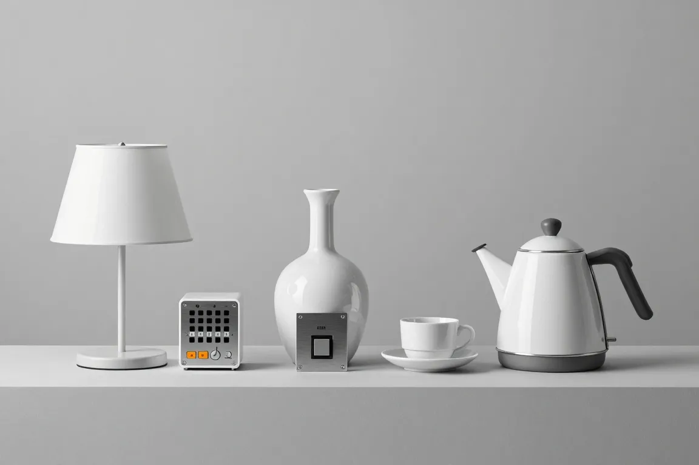

industridesign · 1955–1995 · også: Ulm-modellen, Rams-funksjonalisme, God design (Ulm-skolen)
Systematiske husholdningsprodukter fra Ulm-skolen og Braun-firmaet: grå og hvite kabinetter av aluminium og plast, bygget på et rutenett, med betjeningsorganer som forklarer gjenstanden.

Kjerneidé
Et produkt er et system: det er så lite design som mulig, det forklarer bruken sin, og det passer sammen med naboene på et felles rutenett.
Designprinsipper
Bygg hvert produkt på et rutenett; sett alle deler til en modul på 5 eller 10 mm.
Gjør kabinettet til en enkel boks med radius 1 til 4 mm, i hvitt, grått eller svart.
Sett betjeningsorganene i en tydelig gruppe og merk hvert med et lite, grått eller hvitt symbol.
Bruk aluminium, stål eller matt plast; ingen flate har dekorativ tekstur.
Hold fargen til én funksjon alene: en grønn, rød eller gul tast eller et merke.
Gjør hver gjenstand til en del av en familie som deler størrelse, rutenett og farge.
Tegn for lang bruk: velg en form som fortsatt er riktig etter 10 år.
Test gjenstanden for bruk, støy og reparasjon før formen er endelig.